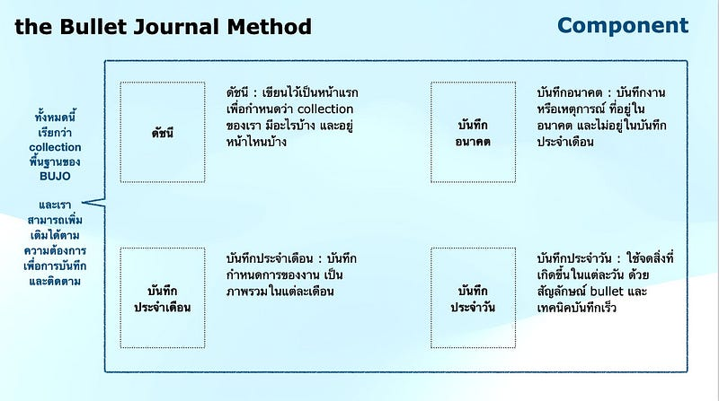
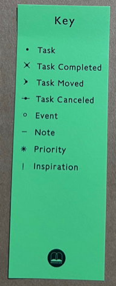

let’s start ‘BUJO’
The Bullet Journal Method
บทความนี้จะเป็น BUJO แบบสั้นๆๆ รวบรัดนะคะ ถ้าใครอ่านเจอแล้วสนใจข้อมูลหรือต้องการรายละเอียดเพิ่มเติม อยากแนะนำเหลือเกินว่า ให้อ่านฉบับเต็มกันค่ะ เพลินและมีเหตุมีผลรองรับน่าสนใจมาก
ก่อนจะเข้า concept ของการเขียน BUJO ในหนังสือได้มีเล่าถึง ‘การเขียนด้วยมือ’ แบบรวบรวมข้อดีไว้เยอะเลยค่ะ
ตัวอย่างเช่น
- การเขียนด้วยมือทำให้เกิดกลไกการเคลื่อนไหวที่ซับซ้อน กระตุ้นการทำงานของสมองได้ดีกว่าการพิมพ์ เพราะสมองหลายส่วนทำงาน ทำให้เราคิด และรู้สึกไปพร้อมๆ กัน แม้ว่าจะช้ากว่าการพิมพ์ ทำให้เป็นประโยชน์ต่อกระบวนการรับรู้ของเรามากกว่า
- เมื่อเราสรุปความคิดของเราออกมา และเขียนให้กระชับโดยไม่เสียความหมาย จะต้องอาศัยการตั้งใจฟัง คิดตาม ระบบประสาทกลั่นกรองความคิดทำให้เกิดการเรียนรู้
- การเขียนด้วยภาษาเราเอง ทำให้เกิดความผูกพันกับข้อมูล สร้างกระบวนการคิดที่แข็งแรง เกิดการเชื่อมโยงใหม่ๆ นำไปสู่ความรู้ ความเข้าใจ หรือวิธีการแก้ปัญหาใหม่ๆ ทำให้ตระหนักรู้ ความเข้าใจในมุมกว้าง และลึก
- การเขียนช่วยบำบัดจิตใจ เมื่อเขียนจะเกิดระยะห่างระหว่างความคิดกับผู้เขียน ทำให้ผู้เขียนได้เห็นภาพรวมชัดเจนขึ้น และสามารถจัดการปัญหาต่อไปได้
จากข้อดีที่โน้มน้าวให้เราอยากเขียนด้วยมือ เชื่อว่าถึงตรงนี้บางคนน่าจะเริ่มอยากหยิบสมุดปากกามาเริ่มแล้วนะคะ

ส่วนประกอบของ BUJO ก็คือ เริ่มจากแบ่งส่วนของสมุดบันทึกของเราออกเป็น collection พื้นฐานตามรูปด้านบน ถ้าใครอยากจะจดอย่างอื่นเป็นพิเศษก็สามารถเพิ่มได้ (ซึ่งเราจะเรียกว่า collection พิเศษ)
ส่วนที่ 1 : ดัชนี <ใส่เลขหน้า 1–4>
เริ่มด้วยดัชนี โดยเว้นหน้า 1–4 ไว้สำหรับระบุหัวข้อ collection ที่มีเนื้อหาที่เขียนขึ้นแล้วเท่านั้น และอ้างอิงเลขหน้า
ส่วนที่ 2 : บันทึกอนาคต <ใส่เลขหน้า 5–8>
เราจะเว้นที่เอาไว้สำหรับบันทึกอนาคต โดยใช้หน้า 5–8 และแบ่งแต่ละหน้าออกเป็น 3 เดือน ดังนั้น 4 หน้าของเราจะมี 12 เดือน เอาไว้เขียนกำหนดการต่างๆ ที่เรารู้ล่วงหน้าหรือสิ่งที่เราวางแผนให้กับตัวเองเอาไว้ในอนาคต จากนั้นกลับไปจดลงดัชนี
ส่วนที่ 3 : บันทึกประจำเดือน <ใส่เลขหน้า 9–10>
เราจะใช้หน้ากระดาษในการจดบันทึกประจำเดือน 2 หน้า โดยเราจะไม่เว้นเอาไว้ล่วงหน้าเผื่อ 12 เดือน แต่เราจะสร้างขึ้นใหม่ในทุกเดือน รูปแบบของการบันทึกประจำเดือน คือ ด้านซ้ายเป็นวันที่ในเดือนปัจจุบัน ด้านขวาเป็นเหตุการณ์ กำหนดการ งานต่างๆ ไล่เรียงไปตั้งแต่วันที่ 1 ถึงวันที่สิ้นสุดในเดือน
ส่วนที่ 4 : บันทึกประจำวัน <ใส่เลขหน้าตามจริงเมื่อเร่ิมจด *ไม่ต้องจดลงดัชนี>
ใส่วันที่เป็นหัวข้อ และจดทุกอย่างได้อย่างอิสระตามที่เราต้องการ โดยใช้เทคนิคบันทึกเร็ว (สรุปให้ได้ใจความด้วยภาษาของเรา มีประโยชน์เมื่อกลับมาย้อนดู สามารถทบทวนสิ่งที่เกิดขึ้นได้)
เทคนิคบันทึกเร็ว สิ่งนี้มาพร้อมสัญลักษณ์ต่างๆ ที่ใช้กำหนดสื่อความหมายของงาน และเหตุการณ์ รวมไปถึงการสรุปข้อความจดบันทึกให้เป็นภาษาของเรา เพื่อให้ได้ใจความมีประโยชน์ในการย้อนกลับมาดูทบทวนสิ่งที่เกิดขึ้น เพื่อให้เกิดการเรียนรู้ด้วยตัวเองอย่างทรงพลัง

ส่วนตัว กิมขอเลือกใช้สัญลักษณ์แค่บางอย่าง เพราะเป็นคนอ่อนแอเรื่องการใช้สัญลักษณ์ต่างๆ หรือโค้ดลับใดๆ
ทบทวนช่วงเช้า ~ เวลาแห่งการวางแผน
ก่อนเข้าสู่วันใหม่ เปิด BUJO ของเรา และใช้เวลาตรวจสอบทวนทุกหน้าในเดือนปัจจุบัน เพื่อให้เราไม่พลาดงานไหนไป จากนั้นเริ่มจัดลำดับความสำคัญของงาน วางแผนงาน อย่างมีทิศทาง ให้วันของเราไม่เป็นวันระเบิดลง หรือลดแรงระเบิดลงได้
ทบทวนช่วงค่ำ ~ เวลาแห่งการพิจารณา
ก่อนนอน เปิด BUJO ของเราย้อนพิจารณาทบทวนสิ่งที่เกิดขึ้นในวันนี้ อาจตั้งคำถามกับตัวเอง พูดคุยกับตัวเอง สะท้อนตัวเอง ให้กลับมา focus สิ่งที่สำคัญต่อตัวเราเองอย่างแท้จริง ขีดฆ่างานที่เสร็จแล้วออกจากหัวไป หรือเพิ่มงานที่ยังวนเวียนในหัวแต่ยังไม่ได้จด ปลดปล่อยตัวเองให้หลุดจากภาระหน้าที่ต่างๆ เตรียมตัวหลับแบบไม่กังวลใดๆ
กิมขอเน้นย้ำอีกครั้งค่ะ ยังมีรายละเอียด และข้อมูลเพิ่มเติมในหนังสือของผู้คิดค้น BUJO | Ryder Carroll นะคะ อยากให้อ่านกันก่อนที่จะเริ่มเขียน BUJO กันจริงๆ ค่ะ จะได้ประโยชน์จากการเขียน BUJO ให้ได้มากที่สุด
ขอบคุณที่อ่านมาถึงตรงนี้ค่ะ ^^